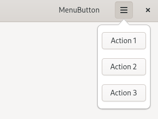

(update:2026/2/18)
Gtk::MenuBar は、モダンな GTK4 アプリで「メニューを開くためのボタン」を提供するための重要なウィジェットで、従来の Gtk::Menu や Gtk::MenuBar よりも柔軟で、ポップオーバー中心のユーザーインターフェースの設計に適しています。
Gtk::MenuButton は、クリックすると ポップオーバー（Gtk::Popover）を表示するためのボタンです。GTK4 では、従来の「プルダウンメニュー」よりも ポップオーバーとなるユーザーインターフェースが推奨されており、そのための標準的なエントリポイントが Gtk::MenuButton です。
set_popover() を使って、を使って、任意の Gtk::Popover を割り当てることができます。
void Gtk::MenuButton::set_popover( Gtk:Popover& popover )
ポップオーバー内部には、Gtk::Box や Gtk::ListBox を自由に配置することができるため、柔軟なメニューのユーザインターフェースを構築することが可能です。
set_icon_name() を使えば、ハンバーガーメニューや設定アイコンなどを簡単に表示することができます。
void Gtk::MenuButton::set_icon_name( const Glib:ustring& icon_name )
set_menu_model() を使うと、Gio::Menuベースの宣言的メニューを割り当てることができます。
void Gtk::MenuButton::set_menu_model( const Glib:RefPtr<const Gio::MenuModel>& menu_model )
set_direction()により、ポップオーバーの表示方向を指定することができます。
void Gtk::MenuButton::set_direction( Gtk::ArrowType direction )
| Gtk::ArrowType | |
|---|---|
| 記 号 | 内 容 |
| UP | 上向きの矢印を表す |
| DOWN | 下向きの矢印を表す |
| LEFT | 左向きの矢印を表す |
| RIGHT | 下向きの矢印を表す |
| NONE | 矢印無し |
Gtk::Popover にメニューの内容を登録し、その後、Gtk::Popover を Gtk::MenuButton に結びつけます。
Gtk::MenuButton、Gtk::Popover を宣言します。
set_icon_name() を用いて Gtk::MenuButton に表示するアイコンをセットします。
Gtk::HeaderBar の右側に Gtk::MenuButton をセットします。
Gtk::Box を縦書きで領域を確保します。そして、 Gtk::Button の領域を確保します。
Gtk::Button のイベントシグナル(signal_click) が発生した際に、標準出力(std::cout)に "Action clicked" となるメッセージを表示します。
Gtk::Box に Gtk::Button を apeend() メソッドで格納します。
Gtk::Popover に Gtk::Box を子ウィジットとしてセットします。
set_popover() メソッドを用いて、Gtk::MenuButton に Gtk::Popover をセットします。
#include <gtkmm.h>
#include <iostream>
class MyWindow : public Gtk::Window
{
public:
MyWindow();
virtual ~MyWindow() = default;
private:
// 1.child widget の宣言
Gtk::HeaderBar headerbar;
Gtk::Label title_label{ "MenuButton" };
// 1.1 Gtk::MenuButtonの宣言
Gtk::MenuButton menu_button;
// 1.2 Gtk::Popoverの宣言
Gtk::Popover popover;
};
MyWindow::MyWindow()
{
set_title( "MenuButton" );
set_default_size( 320, 240 );
// HeaderBar
headerbar.set_title_widget( title_label );
set_titlebar( headerbar );
// 2.Gtk::MenuButton の設定
// 2.1 アイコンのセット
menu_button.set_icon_name( "open-menu-symbolic" );
// 2.2 Gtk::HeaderBar に Gtk::MenuButton をセット
headerbar.pack_end( menu_button );
// 3.Gtk::Popover の設定
// 3.1 Gtk::Box と Gtk::Button の領域を確保
auto box = Gtk::make_managed<Gtk::Box>( Gtk::Orientation::VERTICAL, 6 );
auto btn1 = Gtk::make_managed<Gtk::Button>( "Action 1" );
auto btn2 = Gtk::make_managed<Gtk::Button>( "Action 2" );
auto btn3 = Gtk::make_managed<Gtk::Button>( "Action 3" );
// 3.2 Gtk::Button のイベントシグナルとシグナルハンドラーを接続
btn1->signal_clicked().connect([] {
std::cout << "Action 1 clicked\n";
});
btn2->signal_clicked().connect([] {
std::cout << "Action 2 clicked\n";
});
btn3->signal_clicked().connect([] {
std::cout << "Action 3 clicked\n";
});
// 3.3 Gtk::Box に Gtk::Button を格納
box->append( *btn1 );
box->append( *btn2 );
box->append( *btn3 );
// 3.4 Gtk::Popover に Gtk::Box をセット
popover.set_child( *box );
// 4.Gtk::MenuButton に Gtk::Popoverを紐づけ
menu_button.set_popover( popover );
}
int main( int argc, char* argv[] )
{
auto app = Gtk::Application::create( "menubutton.example1" );
return app->make_window_and_run<MyWindow>( argc, argv );
}
| Gtk::Popoverで紐づけ | |
|---|---|
| Console | Window |
|
$ ./test & $ Action 1 clicked $ Action 2 clicked $ Action 3 clicked $ |
 |